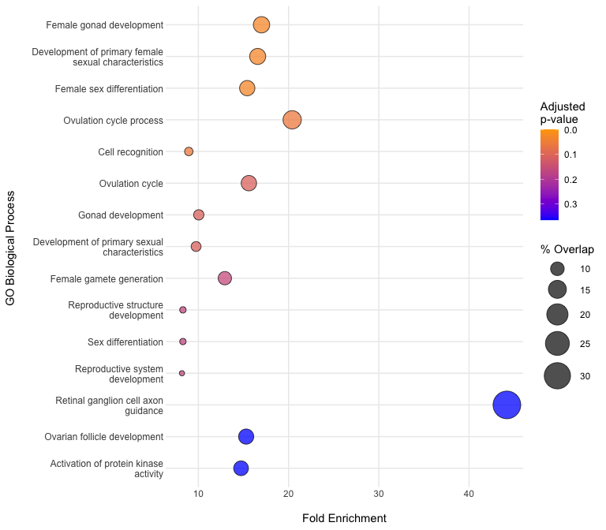
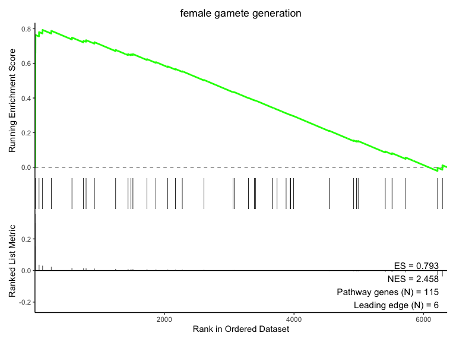
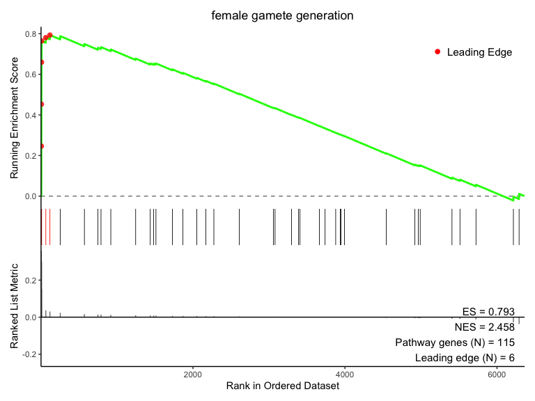

This R package is an in-development resource and is research use only.
Overview
The SomaEnrich R package provides tools to perform pathway analysis with proteomic data obtained from the SomaScan assay. The package also provides auxiliary functions for manipulating, converting, and filtering data prior to pathway analysis, as well as detailed documentation describing the unique steps required to perform these operations with proteomic data (as opposed to genomic data).
For more information about SomaScan data files (i.e. the ADAT, or .adat file) and their format, please see the SomaLogic-Data GitHub repository.
If you run into any issues/problems with SomaEnrich or have questions about SomaScan analysis that are not answered by this package, please consult the issues page and submit an issue and/or feature request.
Package Key Features
- Overrepresentation Analysis (ORA): Identify pathways enriched in a set of differentially expressed proteins using hypergeometric testing
- Gene Set Enrichment Analysis (GSEA): Perform preranked GSEA to detect coordinated changes in predefined gene sets
-
SomaScan Identifier Handling: Conversion between common gene identifiers and SomaScan-specific
AptNames - Visualization Tools: Plots to visualize the results of ORA and GSEA
Installation
Note: SomaEnrich was developed and tested on macOS and Linux operating systems. Users running Windows may encounter unexpected behavior or errors.
SomaEnrich requires that the user have R >= 4.4.0 installed on their system.
To install and load SomaEnrich from this repository, please run the following:
remotes::install_github("SomaLogic/SomaEnrich")Once installed, the package can be loaded using the usual syntax:
Package Dependencies
Below are the package dependencies for SomaEnrich (see also the DESCRIPTION file):
-
SomaDataIO - install from CRAN:
install.packages("SomaDataIO") -
fgsea - install from Bioconductor:
BiocManager::install("fgsea") -
ggplot2 - install from CRAN:
install.packages("ggplot2") -
patchwork - install from CRAN:
install.packages("patchwork") -
rlang - install from CRAN:
install.packages("rlang") -
scales - install from CRAN:
install.packages("scales") -
stringr - install from CRAN:
install.packages("stringr") -
tidyr - install from CRAN:
install.packages("tidyr") -
withr - install from CRAN:
install.packages("withr")
The GSEA and ORA functions in this package use the respective algorithms from fgsea, under the hood. Please see the fgsea documentation for more information.
Quick Start
Identifier Conversion
Convert SomaScan analytes to genes:
head(ex_apt_pathway)
#> [1] "seq.9843.5" "seq.3174.2" "seq.9057.19" "seq.15627.83" "seq.2867.52"
#> [6] "seq.9835.16"
apt2gene(head(ex_apt_pathway))
#> [1] "ACTN1" "ADAMTS1" "ADRM1" "AKT1" "AKT1" "ALDH1A3"Convert genes to SomaScan analytes:
genes <- withr::with_seed(123, sample(ex_gene_pathway, 5))
gene2apt(genes) # Returns NA if no analyte is found
#> [1] "seq.15447.45" "seq.21577.35" "seq.22128.8" NA "seq.12563.2"Convert a GO term from genes to SomaScan analytes:
go2apt("GO:0022602")
#> [1] "seq.10366.11" "seq.10550.37" "seq.12077.32" "seq.12444.39" "seq.13738.8"
#> [6] "seq.14056.4" "seq.14583.49" "seq.14634.13" "seq.18814.21" "seq.18930.28"
#> [11] "seq.18931.40" "seq.19622.7" "seq.20430.8" "seq.21899.36" "seq.22578.17"
#> [16] "seq.2575.5" "seq.25954.3" "seq.2748.3" "seq.2765.4" "seq.2953.31"
#> [21] "seq.3032.11" "seq.3046.31" "seq.3067.67" "seq.3520.58" "seq.3521.16"
#> [26] "seq.3593.72" "seq.4156.74" "seq.4160.49" "seq.4383.97" "seq.4904.7"
#> [31] "seq.4914.10" "seq.4923.79" "seq.4956.2" "seq.5036.50" "seq.5107.7"
#> [36] "seq.5116.62" "seq.6425.87" "seq.8036.75" "seq.8467.9" "seq.8484.24"Overrepresentation Analysis (ORA)
Identify pathways represented in a set of differentially expressed proteins:
# Get top differentially expressed genes from a pre-sorted results table
deg <- head(t_tests$EntrezGeneSymbol, 50)
uni <- t_tests$EntrezGeneSymbol
# Run ORA using GO Biological Process (the default)
ora_res <- somaORA(features = deg, universe = uni)
head(ora_res)
#> resource_code pathway_id pathway
#> 1 bp GO:0008585 female gonad development
#> 2 bp GO:0046545 development of primary female sexual characteristics
#> 3 bp GO:0046660 female sex differentiation
#> 4 bp GO:0022602 ovulation cycle process
#> 5 bp GO:0008037 cell recognition
#> 6 bp GO:0042698 ovulation cycle
#> pval padj foldEnrichment overlap size
#> 1 9.367678e-06 0.03093025 16.997863 5 39
#> 2 1.064565e-05 0.03093025 16.572917 5 40
#> 3 1.531200e-05 0.03093025 15.416667 5 43
#> 4 3.771120e-05 0.05713247 20.397436 4 26
#> 5 4.834273e-05 0.05859138 8.938202 6 89
#> 6 1.119160e-04 0.10809292 15.598039 4 34
#> overlapFeatures
#> 1 CGA, FSHB, LEP, LHB, ROBO2
#> 2 CGA, FSHB, LEP, LHB, ROBO2
#> 3 CGA, FSHB, LEP, LHB, ROBO2
#> 4 CGA, FSHB, LEP, ROBO2
#> 5 LGALS3, ROBO2, CNTNAP2, FETUB, NTM, COLEC12
#> 6 CGA, FSHB, LEP, ROBO2
# Visualize the ORA results
plotBubble(ora_res, n_pathways = 15)
Gene Set Enrichment Analysis (GSEA)
Pre-ranked GSEA can be performed using the following workflow:
Preparing Ranked Input
Resolve many-to-one analyte-gene mappings and split heterodimers to create a clean, unique ranking vector suitable for GSEA:
unique_ranks <- prepareRanks(stats = t_tests$log2_fc,
features = t_tests$EntrezGeneSymbol,
resolve_multimapping = TRUE,
resolve_method = "abs")
head(unique_ranks)
#> PZP CGA FSHB ENPP2 LHB CGB3
#> 0.43998712 0.35889179 0.35889179 0.05463412 0.21663722 0.29986665Running GSEA
Perform preranked GSEA to detect coordinated pathway changes:
# Use GO Biological Process (the default)
gsea_res <- somaPrGSEA(ranks = unique_ranks)
#> Warning in prepareStats(stats, scoreType, gseaParam): There are ties in the preranked stats (0.49% of the list).
#> The order of those tied genes will be arbitrary, which may produce unexpected results.
# Visualize the enrichment score for a chosen pathway
plotES("female gamete generation", gsea_results = gsea_res)
# Add leading edge points to plot
plotES("female gamete generation", gsea_results = gsea_res, show_leading_edge = TRUE)
Package Data Objects
SomaEnrich comes bundled with data objects for use in examples and vignettes:
| Object | Description |
|---|---|
example_data_11k |
A soma_adat containing example 11K SomaScan data |
t_tests |
Results of a two-group comparison of the Sex variable to identify genes differentially expressed in males vs. females |
pathway_map |
Mapping of genes to pathways from GO and MSigDB |
ex_gene_pathway |
Example pathway comprised of gene identifiers |
ex_apt_pathway |
Example pathway comprised of SomaScan AptNames
|
The GO and MSigDB data in pathway_map is made available under the terms of the CC BY 4.0 license. See ?pathway_map for more details.
MIT LICENSE
SomaEnrich is licensed under the MIT license and is intended solely for research use only (RUO) purposes. The code contained herein may not be used for diagnostic, clinical, therapeutic, or other commercial purposes.
- See:
- The MIT license:
- Further:
- “SomaEnrich” and “SomaLogic” are trademarks owned by Illumina, Inc. No license is hereby granted to these trademarks other than for purposes of identifying the origin or source of this Software.